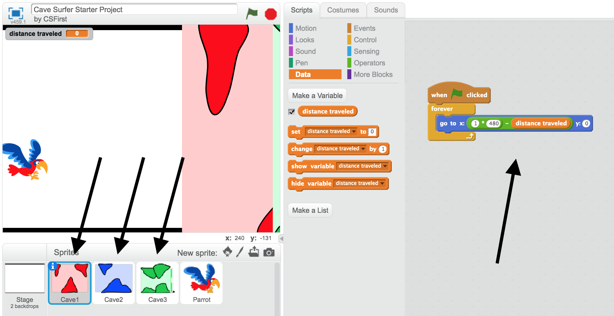
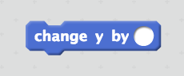
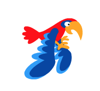
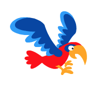
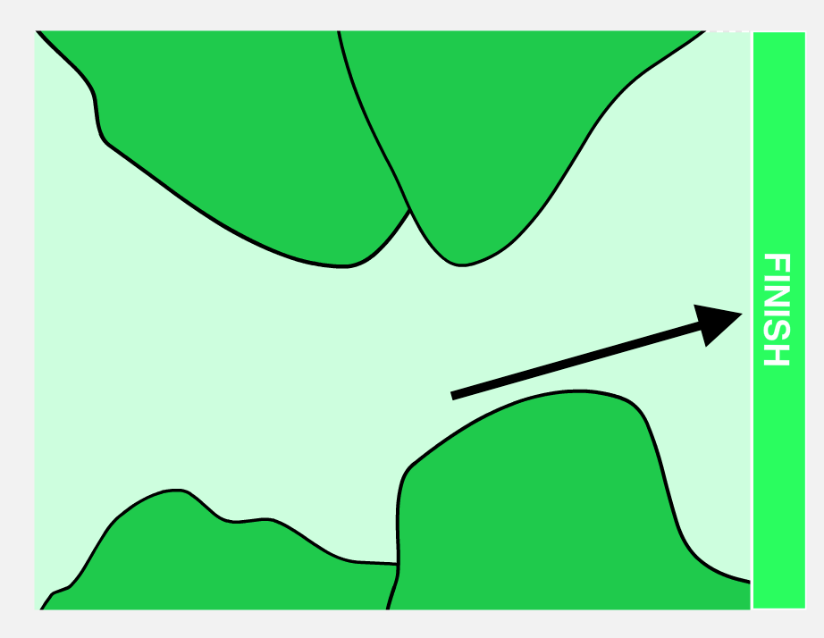

First, we are going to create the scrolling background to give the appearance of the bird moving.
The starting positions of each colored cave have been programmed for you.
Look at the code for each cave sprite and understand how the changing the distance traveled variable changes the cave location on screen.
If you have questions, ask a mentor.

Steps
Use the distance traveled variable in code to move the background across the screen.
Reset the background's position at the start of each game.
Add an event block to start the story by clicking the green flag.
Next, we are going to control the parrot's motion.
Steps
Program the parrot to go move up when the space bar is pressed.
Have the parrot go up by 5 when the space bar is pressed and go down by 5 otherwise.

Change the parrot's costume when it goes up and down to make the flying look more realistic.
 
Now, we are going to add winning and losing conditions.
Steps
Use the finish line in the final cave background and an if statement to add the winning condition.

Have the player lose when the parrot touches the cave walls.
Program the game to reset when the player wins or loses.
If you finish early, implement one or more of the following features for a bonus checkoff.